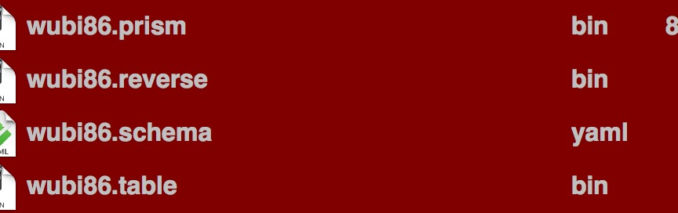

Title:rime 输入法的词库配置
在手机上安装了irime输入法，用了五笔还是蛮舒服的，不过词库中没有我需要的词，所以想弄一份自己的词库，网上也看了不少教程，可能是一开始看得不太明白，觉得难，加上也没有仔细看手机自带的说明，搞了半天也没有弄出来，不过也没有灰心。在仔细看了说明之后发现，其实只要在电脑上配置了，然后把相应的文件传到手机里就可以了。
在电脑上的~/Library/rime 里，把schema.yaml 与 dict.yaml做好，dict.yaml是原始的码表文件，我为了保持一、二级简码，原来的wibi86词库没有动，用深蓝词库转换好的文件添加到后面（深蓝有设置词频功能，可以联网速度比较慢）。然后在电脑是进行部署，把下图中的文件传到电脑上就可以了。

后来，我有学着网上把皮肤改了一下，也学了一下自动造词，感觉还可以了。不比清歌差，就是没有打时间等特殊编码的功能。
感觉这个输入法的好处是，一套编码可以在多个平台复用 ，真得很不错。
comments powered by Disqus